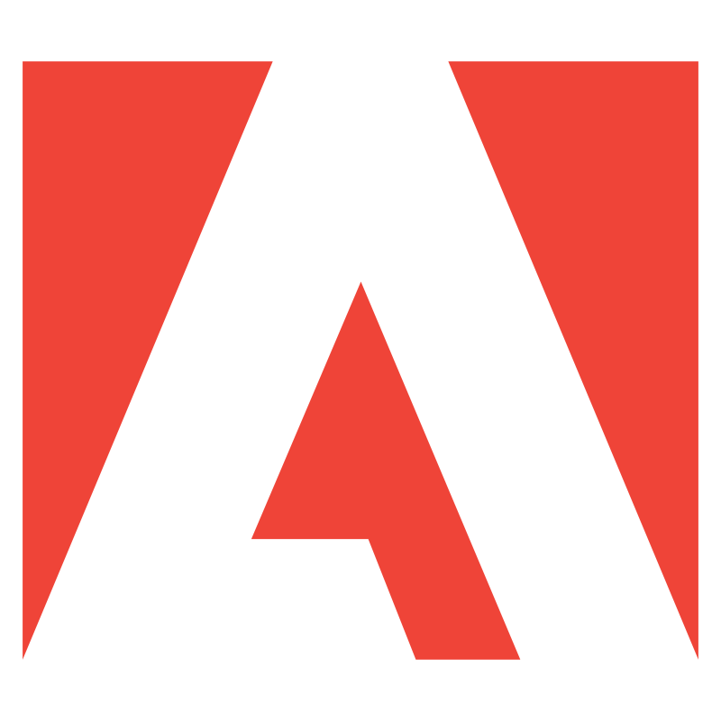
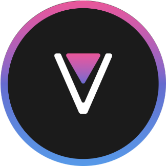

Все связанное с накопителями

WONDERSHARE RECOVERIT PRO (гугл диск)
Windows only
восстановление данных с HDD
IBEESOFT DATA RECOVERY (гугл диск)
Windows only
восстановление данных с флеш-накопителей
My Disk Fix (гугл диск)
Windows only
перепрошивка размеров накопителя
Victoria (оф сайт)
Victoria (гугл диск)
Windows only
проверка hdd/ssd накопителей
h2testw (оф сайт)
h2testw (гугл диск)
Windows only
проверка флеш/sd-накопителей

ventoy (оф сайт)
Windows/linux/livecd(без os)
основан на GRUB2, позволяет создавать мультизагрузочные флешки ,поддерживает BIOS/UEFI а так-же Secure Boot
умеет обходить проверку железа, установку без Secure Boot для Win11, а так-же установку без учетки microsoft
Rufus (оф сайт)
Windows only, есть portable версия
утилита для создания загрузочных носителей, поддерживает BIOS/UEFI
так-же умеет обходить проверку по железу
крайне простое гуи и мелкий вес
Ломаный софт Микромягких и активаторы для них
MAS (github)
активатор шинды (Win Vista и позже)
рекомендуется ставить через PowerShell(дефендер не детектит ниче, ибо выполняется полностью на RAM
powershell (оф сайт)
комманда на установку в озу MAS(только для PowerShell, не cmd)
irm https://get.activated.win | iex

Графические редакторы, кады и вся такая дич

Adobe Photoshop 2020 (гугл диск)
RePack by KpoJIuK
Adobe Premiere Pro 2025 (rutracker)
Full Multi-Ru Portable
VPN клиенты на базе Xray-core
v2rayN (github)
Windows/linux/macOS
nekoray (github)
Windows/linux
гуи проще чем в v2ray, но он не способен одновременно переварить tcping большого количества нод
менее гибкий чем V2ray
v2rayNG (github)
Android
В гитхабе выбираете релизы -> и там arm64.apk
3 тире -> группы -> + ->добавляете ссылку на подписку
v2raytun (оф сайт)
ios
Слитые ноды
Мобильный модифицированный или пиратский софт

revanced manager (оф сайт)
Android
позволяет патчить apk (в основном youtube)
если видос не грузит дальше 1мин/ не перематывается/ другие проблемы с плеером - найстройки -> прочие -> подмена видеопотока -> клиент по умолчанию, и там пробуете другие варианты, либо может помочь отключение "подменить видеопотоки"
Удаление всякого гавна, даже если оно запущено
Unlocker 1.9.2 (rutracker)
Windows
PowerToys (оф сайт)
Windows
встроеный в неё модуль File Locksmith позволяет посмотреть и остановить блокирующие дескрипторы , для дальнейшего удаления выбраного файла/папки